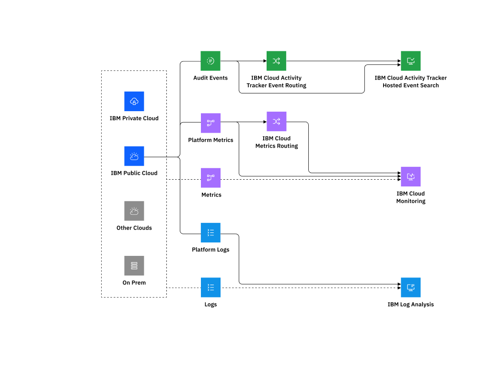
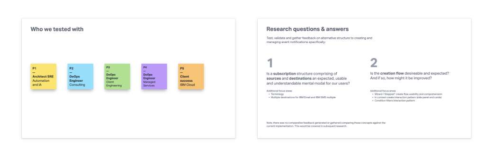
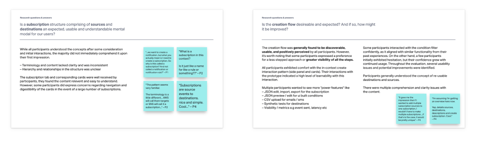
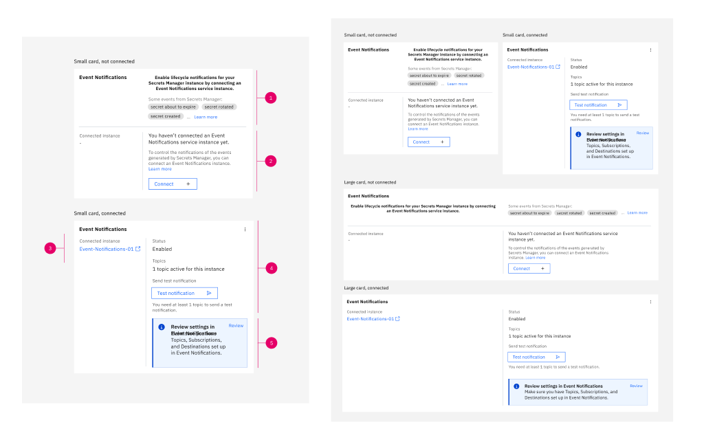
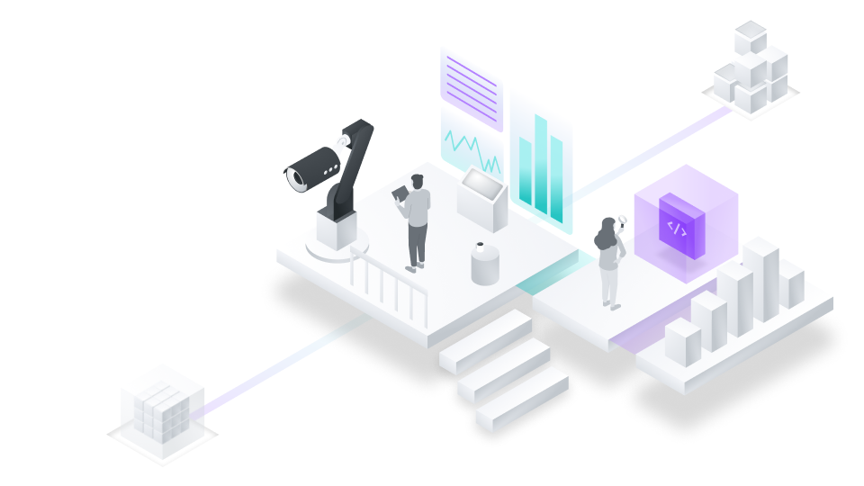
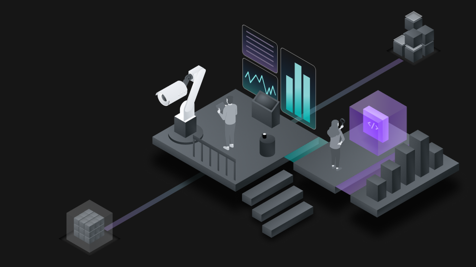
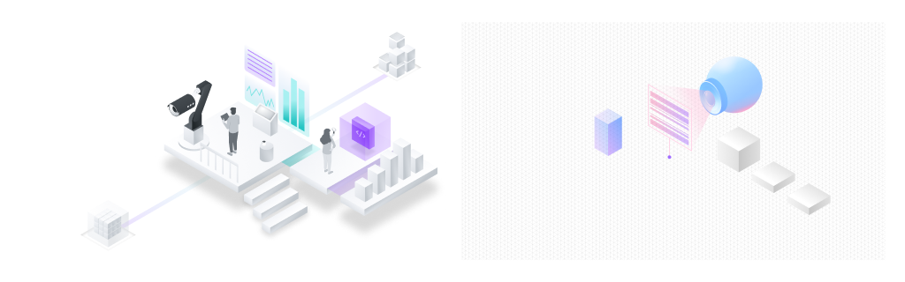

Product Design · Visual Systems
IBM Cloud
I learned the technical system, then used research, product design, and visual storytelling to help other people understand it.


The value
Learn the system, then help other people see it.
I ramped up on cloud infrastructure, observability, UX and UI design, and enterprise development. Documentation and hands-on product exploration helped the pieces come together.
I learned to apply that technical understanding through product flows, illustrations, narratives, and presentations. The goal was not to simplify the technology away. It was to make the system easier to understand and act on.
Events, metrics, and logs moved through a shared technical environment.

Proof 01 · End-to-end research and design
Use research to find a more focused path.
Event Notifications was the first project where I was assigned to conduct the end-to-end research and design process, then concept-test the design. I worked with the product manager and my design lead to propose an alternative way to send a notification.
The opportunity was to consolidate two related concepts into one without losing an effective way to complete the task.
The proposed structure also made it easier to store and reuse the different demographics or groups that notifications were sent to. I explored the sequence through co-design, a high-fidelity prototype, and concept testing.
For conditions, I used a familiar filter model and revealed compound logic only when needed. This was a proposed and concept-tested alternative, not a claim that the original was defective or that the alternative shipped.
Testing the flow
Research stayed with the Event Notifications story.

The first round framed the research questions around subscription structure and flow.

The findings sharpened hierarchy, terminology, and expectations for reusable destinations and sources.

I took this component into high fidelity, focusing on hierarchy, connection status, and actions.
Proof 02 · Review and adaptation
Use exploration to understand the work ahead.
A Monitoring heuristic evaluation revealed a large set of visual and UX issues. Later, IBM Cloud Logs explorations tested how an external product could align with IBM Cloud and helped expose the manual work an overhaul would require.
Review the product, then use the findings to scope a credible next move.
My first major Monitoring review followed an established heuristic-evaluation path. I already understood the broader Observability space, but I was new to this specific product. The review logged a large number of visual and UX issues for the team to investigate.
IBM Cloud Logs was based on Coralogix's white-label observability offering. In Figma, I explored how it could adapt to IBM branding and IBM Cloud product conventions across color variables, icons, navigation, data visualizations, spacing, components, typography, and light and dark themes.
Those explorations tested visual consistency and identified where the first overhaul would need manual intervention. These explorations helped scope the adaptation work, but they should not be read as proof that every explored state shipped.

Translating the visual system
I mapped source visualization roles toward IBM theme values, revealing where token transfer worked and where manual decisions remained.
Proof 03 · Built visual methods for reuse
Move from making images to defining a method.
The illustration work began as a collaborative workgroup and an early trial of moving the illustration workflow from Sketch to Figma.
We began with illustrations for our own products, then developed a method that other designers could inspect and extend.
I participated as a co-designer. My contributions included product illustrations and visual concepts, reusable Figma components, construction and styling guidance, documentation, reviews of other designers' work, light-mode adaptation, and mentoring or onboarding contributors.
Over time, the work expanded across Developer Services and more broadly across IBM Cloud. The artifacts below show the shared construction logic and range without presenting the system as my sole creation.

Early sketches narrowed composition, service metaphors, and hierarchy before final rendering.

Shared base, shadow, color, gradient, and lighting rules made the illustration language inspectable and reusable.
Complete exports for six product stories show how shared perspective and lighting adapted across themes without flattening each service into the same composition.







Shared perspective and lighting rules connected distinct product stories without making them identical.
A reduced service-icon set carried the same geometry and color discipline into smaller surfaces.
What changed
Research, exploration, and moments of delight.
I ramped up quickly in my technical knowledge and learned to apply it through illustrations, narratives, and presentations that made technical ideas easier to understand.
Design can save time by reducing uncertainty, uncover valuable information, and turn what we learn into something useful and compelling. It can also make room for great, neat things that bring delight to a technical experience.